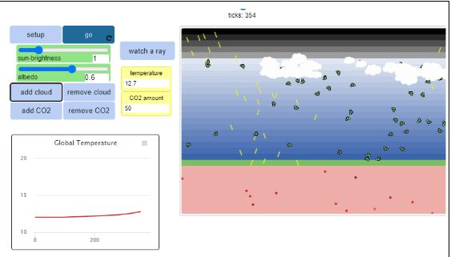
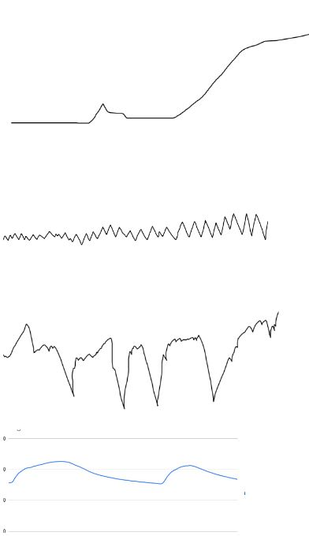
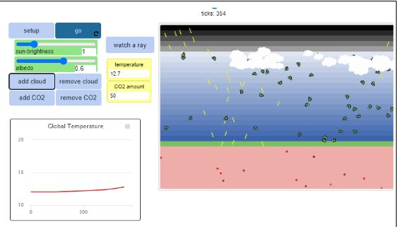
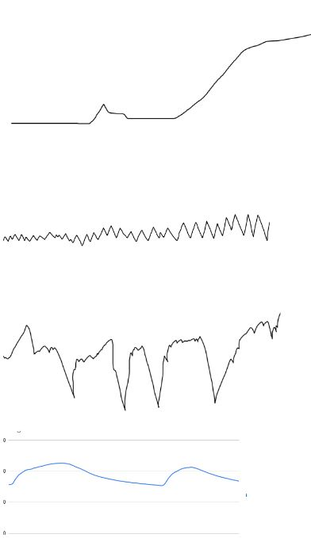
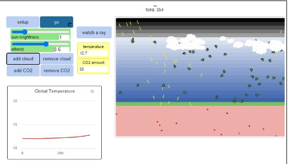

This is my Portfolio Page!

This is my Hangman Project for 1.1.9.

This is a two player game and the objective is to not let the ball touch your wall. Everytime the ball hits your wall the other player gets a point!

This is my first scratch project. It is an advanced clicker game that allows you to evolve the pokemon as you level up.

This is my scratch project for my digital portfolio. The user controls a moving square to pass levels. Once they reach the last level, they win the game!

Modified bits in pictures.

The model is simulating temperature and co2 levels in clouds

3.1.6 sensors can be used to track data and collect data and we can use plots to find comparatives imlarties. We Determined the environments and compared it to previously known knowledge and see if the numbers are similar.
This is my scratch project for my digital portfolio. The user controls a moving square to pass levels. Once they reach the last level, they win the game!
Modified bits in pictures.

The model is simulating temperature and co2 levels in clouds

3.1.6 sensors can be used to track data and collect data and we can use plots to find comparatives imlarties. We Determined the environments and compared it to previously known knowledge and see if the numbers are similar.
